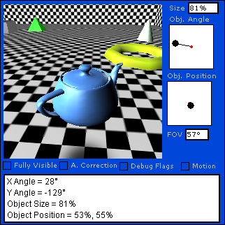

From Wikipedia, the free encyclopedia
"Video Games" redirects here. For the 2011 song by Lana Del Rey, see Video Games (song).
A video game is a electronic game that involves interaction with a user interface or input device, such as a joy stick, controller, keyboard, or motion sensing devices, to generate visual feedback on a two- or three-dimensional video display device such as a TV set, monitor, touchscreen, or virtual reality headset. Video games are augmented with audio feedback from speakers or headphones, and optionally with other types of feedback systems including haptic technology.
Video games are defined based on their platform, which include arcade games, console games, and PC games. More recently, the industry has expanded onto mobile gaming through smartphones and tablet computers, and remote cloud gaming. Video games are classified into a wide range of genres based on their type of gameplay and purpose.
The first video games were simple extensions of electronic games using video-like output from large room-size computers in the 1950s and 1960s, while the first video games available to consumers appears in 1972 through way of the Magnavox Odyssey home console, and the 1971 release of the arcade game Computer Space, followed the next year by Pong. Today, video game development requires numerous skills to bring a game to market, including developers, publishers, distributors, retailers, console and other third-party manufacturers, and other roles.
Since the 2010s, the commercial importance of the video game industry has been increasing. The emerging Asian markets and mobile games on smartphones in particular are driving the growth of the industry. As of 2018, video games generated sales of US$134.9 billion annually worldwide, and were the third-largest segment in the U.S. entertainment market, behind broadcast and cable TV.
Main articles: History of video games and Early history of video games
Early games used interactive electronic devices with various display formats. The earliest example is from 1947—a "Cathode ray tube Amusement Device" was filed for a patent on 25 January 1947, by Thomas T. Goldsmith Jr. and Estle Ray Mann, and issued on 14 December 1948, as U.S. Patent 2455992.[2] Inspired by radar display technology, it consisted of an analog device that allowed a user to control a vector-drawn dot on the screen to simulate a missile being fired at targets, which were drawings fixed to the screen. Other early examples include: Christopher Strachey's Draughts game, the Nimrod computer at the 1951 Festival of Britain; OXO a tic-tac-toe Computer game by Alexander S. Douglas for the EDSAC in 1952; Tennis for Two, an electronic interactive game engineered by William Higinbotham in 1958; Spacewar! written by MIT students Martin Graetz, Steve Russell, and Wayne Wiitanen's on a DEC PDP-1 computer in 1961; and the hit ping pong-style Pong, a 1972 game by Atari. Each game used different means of display: NIMROD used a panel of lights to play the game of Nim, OXO used a graphical display to play tic-tac-toe Tennis for Two used an oscilloscope to display a side view of a tennis court, and Spacewar! used the DEC PDP-1's vector display to have two spaceships battle each other.
These preliminary inventions paved the way for the origins of video games today. Ralph H. Baer, while working at Sanders Associates in 1966, came up with the idea of using a control system to play a rudimentary game of table tennis on a television screen. With Sanders' blessing, Baer build out the prototype "Brown Box". Sanders patented Baer's inventions and licensed them to Magnavox, who commercialized it as the first home video game console, the Magnavox Odyssey, released in 1972. Separately, Nolan Bushnell and Ted Dabney, inspired by seeing Spacewar! running at Stanford University, came up with the idea of creating a similar version running in a smaller cabinet using a less expensive computer with a coin-operated feature. This was released as Computer Space, the first arcade game, in 1971. Bushnell and Dabney went on to form Atari, Inc., and with Allan Alcorn, created their second arcade game Pong in 1972, which was directly inspired by the table tennis game on the Odyssey. Sanders and Magnavox sued Atari on patent infringement over Baer's patents, but Atari settled out of court, paying for perpetual rights to the patents. Following their agreement, Atari went ahead with plans to make a home version of Pong, while was released by Christmas 1975. The success of the Odyssey and Pong, both as an arcade game and home machine, launched the video game industry. Both Baer and Bushnell have been given the title the "Father of Video Games" for their contributions.
The term "video game" was developed to distinguish this class of electronic games that were played to some type of video display rather than those that used the output of a teletype printer or similar device.
The first appearance of the term emerged around 1973. The Oxford English Dictionary cited a November 10, 1973 BusinessWeek article as the first printed use of the term. While Bushnell believed the term came out from a vending magazine review of Computer Space in 1971, a review of the major vending magazines Vending Times and Cashbox showed that the term came much earlier, appearing first around March 1973 in these magazines in mass usage including by the arcade game manufacturers. As analyzed by video game historian Keith Smith, the sudden appearance suggested that the term had been suggested and readily adopted by those involved. This appeared to trace to Ed Adlum, who ran Cashbox's coin-operated section until 1972 and then later founded RePlay Magazine, covering the coin-op amusement field, in 1975. In a September 1982 issue of RePlay, Adlum is credited with first naming these games as "video games": "RePlay's Eddie Adlum worked at 'Cash Box' when 'TV games' first came out. The personalities in those days were Bushnell, his sales manager Pat Karns and a handful of other 'TV game' manufacturers like Henry Leyser and the McEwan brothers. It seemed awkward to call their products 'TV games', so borrowing a word from 'Billboard's description of movie jukeboxes, Adlum started to refer to this new breed of amusement machine as 'video games.' The phrase stuck." In Japan, where consoles like the Odyssey were first imported and then made within the country by the large television manufacturers such as Toshiba and Sharp Corporation, these were also known as "TV games", or TV geemu or terebi geemu.
See also: Glossary of video game terms
As every video game is different, the experience of playing every video game is impossible to summarize in a singular statement, but many common elements exist. Most games will launch into a title screen and give the player a chance to review options such as the number of players before starting a game. Most games are divided into levels which the player must work their avatar through, scoring points, collecting power-ups to boost the avatar's innate attributes, all while either using special attacks to defeat enemies or moves to avoid them. Taking damage will deplete their avatar's health and if that falls to zero or if the avatar otherwise falls into an impossible-to-escape location, the player will lose one of their lifes. Should they lose all their lives without gaining an extra life or "1-UP", then the player will reach the "game over" screen. Many levels as well as the game's finale end with a type of boss character the player must defeat to continue on. In some games, intermediate points between levels will offer save points where the player can create a saved game on storage media to restart the game should they lose all their lives or need to stop the game and restart at a later time. These also may be in the form of a passage that can be written down and reentered at the title screen.
As games are software products, they may still ship with software bugs. These can manifest as glitches within the game which may be exploited by the player; this is often the foundation of speedrunning a video game. Other times, these bugs, along with cheat codes, Easter eggs, and other hidden secrets that were intentionally added to the game can also be exploited. On some consoles, cheat cartridges allow players to execute these cheat codes, while user-developed trainers allow similar bypassing for computer software games, both which can make the game easier, give the player additional power-ups, or change the appearance of the game.
Video games require a platform, a specific combination of electronic components or computer hardware and associated software to operate. The term system is also commonly used. Games are typically designed to be played on one or a limited number of platforms, and exclusivity to a platform is used as a competitive edge in the video game market. The list below is not exhaustive and excludes other electronic devices capable of playing video games such as PDAs and graphing calculators.
Most computer games are PC games, referring to those that involve a player interacting with a personal computer connected to a video monitor. Personal computers are not dedicated game platforms, so there may be differences running the same game on different hardware. Also, the openness allows some features to developers like reduced software cost, increased flexibility, increased innovation, emulation, creation of modifications or mods open hosting for online gaming (in which a person plays a video game with people who are in a different household) and others. A gaming computer is a PC or laptop intended specifically for gaming typically using high-performance, high-cost components. In additional to personal computer gaming, there also exist games that work on mainframe computers and other similarly shared systems, with users logging in remotely to use the computer.
A console game is played on a home console, a specialized electronic device that connects to a common television set or composite video monitor, unlike PCs, which can run all sorts of computer programs, a console is a dedicated video game platform manufactured by a specific company. Usually consoles only run games developed for it, or games from other platform made by the same company, but never games developed by its direct competitor, even if the same game is available on different platforms. It often comes with a specific game controller. Major console platforms include Xbox, PlayStation, and Nintendo.
An arcade game generally refers to a game played on an even more specialized type of electronic device that is typically designed to play only one game and is encased in a special, large coin-operated cabinet which has one built-in console, controllers (joystick, buttons, etc.), a CRT screen, and audio amplifier and speakers. Arcade games often have brightly painted logos and images relating to the theme of the game. While most arcade games are housed in a vertical cabinet, which the user typically stands in front of to play, some arcade games use a tabletop approach, in which the display screen is housed in a table-style cabinet with a see-through table top. With table-top games, the users typically sit to play. In the 1990s and 2000s, some arcade games offered players a choice of multiple games. In the 1980s, video arcades were businesses in which game players could use a number of arcade video games. In the 2010s, there are far fewer video arcades, but some movie theaters and family entertainment centers still have them.
A browser game takes advantages of standardizations of technologies for the functionality of web browsers across multiple devices providing a cross-platform environment. These games may be identified based on the website that they appear, such as with Miniclip games. Others are named based on the programming platform used to develop them, such as Java and Flash games.
With the introduction of smartphones and tablet computers standardized on the iOS and Android operating systems, mobile gaming has become a significant platform. These games may utilize unique features of mobile devices that are not necessary present on other platforms, such as accelerometers, global positing information and camera devices to support augmented reality gameplay.
Cloud gaming requires a minimal hardware device, such as a basic computer, console, laptop, mobile phone or even a dedicated hardware device connected to a display with good Internet connectivity that connects to hardware systems by the cloud gaming provider. The game is computed and rendered on the remote hardware, using a number of predictive methods to reduce the network latency between player input and output on their display device.
Virtual reality (VR) games generally require players to use a special head-mounted unit that provides stereoscopic screens and motion tracking to immerse a player within virtual environment that responds to their head movements. Some VR systems include control units for the player's hands as to provide a direct way to interact with the virtual world. VR systems generally require a separate computer, console, or other processing device that couples with the head-mounted unit.
An emulator enables games from a console or otherwise different system to be run in a type of virtual machine on a modern system, simulating the hardware of the original and allows old games to be played. While emulators themselves have been found to be legal in United States case law, the act of obtaining the game software that one does not already own may violate copyrights. However, there are some official releases of emulated software from game manufacturers, such as Nintendo with its Virtual Console or Nintendo Switch Online offerings.
Early arcade games, home consoles, and handheld games were dedicated hardware units with the game's logic built into the electronic componentry of the hardware. Since then, most video game platforms have means to use multiple games distributed on different types of media or formats. Physical formats include ROM cartridges, magnetic storage including magnetic tape data storage and floppy discs, optical media formats including CD-ROM and DVDs, and flash memory cards. Furthermore digital distribution over the Internet or other communication methods as well as cloud gaming alleviate the need for any physical media. In some cases, the media serves as the direct read-only memory for the game, or it may be the form of installation media that is used to write the main assets to the player's platform's local storage for faster loading periods and later updates.
Games can be extended with new content and software patches through either expansion packs which are typically available as physical media, or as downloadable content nominally available via digital distribution. These can be offered freely or can be used to monetize a game following its initial release. Several games offer players the ability to create user-generated content to share with others to play. Other games, mostly those on personal computers, can be extended with user-created modifications or mods that alter or add onto the game; these often are unofficial and were developed by players from reverse engineering of the game, but other games provide official support for modding the game.
Main article: Game controller

Video game can use several types of input devices to translate human actions to a game. Most common are the use of game controllers like gamepads and joysticks for most consoles. Handheld consoles will have built in buttons and directional pads, similarly arcade games will have controls built into the console unit itself. Many games on personal computers can take advantage of keyboard and mouse controls. Other game controllers are commonly used for specific games like racing wheels, light guns or dance pads. Digital cameras can also be used as game controllers capturing movements of the body of the player.
As technology continues to advance, more can be added onto the controller to give the player a more immersive experience when playing different games. There are some controllers that have presets so that the buttons are mapped a certain way to make playing certain games easier. Along with the presets, a player can sometimes custom map the buttons to better accommodate their play style. On keyboard and mouse, different actions in the game are already preset to keys on the keyboard. Most games allow the player to change that so that the actions are mapped to different keys that are more to their liking. The companies that design the controllers are trying to make the controller visually appealing and also feel comfortable in the hands of the consumer.
An example of a technology that was incorporated into the controller was the touchscreen. It allows the player to be able to interact with the game differently than before. The person could move around in menus easier and they are also able to interact with different objects in the game. They can pick up some objects, equip others, or even just move the objects out of the player's path. Another example is motion sensor where a person's movement is able to be captured and put into a game. Some motion sensor games are based on where the controller is. The reason for that is because there is a signal that is sent from the controller to the console or computer so that the actions being done can create certain movements in the game. Other type of motion sensor games are webcam style where the player moves around in front of it, and the actions are repeated by a game character.
Main article: Video game graphics
By definition, all video games are intended to output graphics to an external video display, such as cathode-ray tube televisions, newer liquid-crystal display (LCD) televisions and built-in screens, projectors or computer monitors depending on the type of platform the game is played on. Features such as color depth, refresh rate, frame rate, and screen resolution are a combination of the limitations of the game platform and display device and the program efficiency of the game itself. The game's output can range from fixed displays using LED or LCD elements, text-based games, two-dimensional and three-dimensional graphics, and augmented reality displays.
The game's graphics are often accompanied by sound produced by internal speakers on the game platform or external speakers attached to the platform, as directed by the game's programming. This often will include sound effects tied to the player's actions to provide audio feedback, as well as background music for the game.
Some platforms support additional feedback mechanics to the player that a game can take advantage of. This is most commonly haptic technology built into the game controller, such as causing the controller to shake in the player's hands to simulate a shaking earthquake occurring in game.
Video games are frequently classified by a number of factors related to how one plays them.
Main article: Video game genre
See also: Gameplay
A video game, like most other forms of media, may be categorized into genres. However, unlike film or television which use visual or narrative elements, video games are generally categorized into genres based on their gameplay interaction, since this is the primary means which one interacts with a video game. The narrative setting does not impact gameplay; a shooter game is still a shooter game, regardless of whether it takes place in a fantasy world or in outer space.
Genre names are normally self-describing in terms of the type of gameplay, such as action game, role playing game, or shoot 'em up, though some genres have derivations from influential works that have defined that genre, such as roguelikes from Rogue, Grand Theft Auto clones from Grand Theft Auto III and battle royale game from the film Battle Royale.[34] The names may shift over time as players, developers and the media come up with new terms; for example, first-person shooters were originally called "Doom clones" based on the 1993 game.[35] A hierarchy of game genres exist, with top-level genres like "shooter game" and "action game" that broadly capture the game's main gameplay style, and several subgenres of specific implementation, such as within the shooter game first-person shooter and third-person shooter. Some cross-genre types also exist that fall until multiple top-level genres such as action-adventure game.
A video game's mode describes how many players can use the game at the same type. This is primarily distinguished by single-player video games and multiplayer video games. Within the latter category, multiplayer games can be played in a variety of ways, including locally at the same device, on separate devices connected through a local network such as LAN parties, or online via separate Internet connections. Most multiplayer games are based on competitive gameplay, but many offer cooperative and team-based options as well as asymmetric gameplay. Online games use server structures that can also enable massively multiplayer online games to support hundreds of players at the same time.
Most video games are created for entertainment purposes, but there are a small subset of games developed for additional purposes beyond entertainment. These include:
Casual games are designed for easy of accessibility, simple to understand gameplay and quick to grasp rule sets, and aimed at mass market audience, as opposed to a hardcore game. They frequently support the ability to jump in and out of play on demand, such during commuting or lunch breaks. Numerous browser and mobile games fall into the casual game area, and casual games often are from genres with low intensity game elements such as match three, hidden object, time management, and puzzle games.[36] Causal games frequently use social-network game mechanics, where players can enlist the help of friends on their social media networks for extra turns or moves each day.[37] More recent are hyper-casual games which use even more simplistic rules for shore but infinitely replayable games.
Education software has been used in homes and classrooms to help teach children and students, and video games have been similarly adapted for these reasons, all designed to provide a form of interactivity and entertainment tied to game design elements. There are a variety of differences in their designs and how they educate the user. These are broadly split between edutainment games that tend to focus on the entertainment value and rote learning but are unlikely to engage in critical thinking, and educational video games that are geared towards problem solving through motivation and positive reinforcement while downplaying the entertainment value.[38] Further, games not initially developed for educational purposes have found their way into the classroom after release, often those that feature open worlds or virtual sandboxes, such as Minecraft.
Further extending from educational games, serious games are those where the entertainment factor may be augmented, overshadowed, or even eliminated by other purposes for the game. Game design is used to reinforce the non-entertainment purpose of the game, such as using video game technology for the game's interactive world, or gamification for reinforcement training. Educational games are a form of serious games, but other types of serious games include fitness games that incorporate significant physical exercise to help keep the player fit, flight simulators that simulate piloting commercial and military aircraft, advergames that are built around the advertising of a product, and newsgames aimed at conveying a specific advocacy message.
Main article: Video game content rating system
Video games can be subject to national and international content rating requirements. Like with film content ratings, video game ratings typing identify the target age group that the national or regional ratings board believes is appropriate for the player, ranging from all-ages, to a teenager-or-older, to mature, to the infrequently seen adults-only titles. Most content review is based on the level of violence, both in the type of violence and how graphic it may be represented, and sexual content, but other themes such as drug and alcohol use and gambling that can influence children may also be identified. A primary identifier based on a minimum age is used by nearly all systems, along with additional descriptors to identify specific content that players and parents should be aware of.
The regulations vary from country to country but generally are voluntary systems upheld by vendor practices, with penalty and fines issued by the ratings body on the video game publisher for misuse of the ratings. Among the major content rating systems include:
Additionally, the major content system provides have worked to create the International Age Rating Coalition (IARC), a means to streamline and align the content ratings system between different region, so that a publisher would only need to complete the content ratings review for one provider, and use the IARC transition to affirm the content rating for all other regions.
Certain nations have even more restrictive rules related to political or ideological content. Notably, China's video game segment is mostly isolated from the rest of the world due to the government's censorship, and all games published there must adhere to strict government review, disallowing content such as smearing the image of the Chinese Communist Party. Foreign games published in China often require modification by developers and publishers to meet these requirements.
Main article: Video game development
See also: Video game industry practices
Video game development and authorship, much like any other form of entertainment, is frequently a cross-disciplinary field. Video game developers, as employees within this industry are commonly referred, primarily include programmers and graphic designers. Over the years this has expanded to include almost every type of skill that one might see prevalent in the creation of any movie or television program, including sound designers musicians, and other technicians; as well as skills that are specific to video games, such as the game designer. All of these are managed by producers.
In the early days of the industry, it was more common for a single person to manage all of the roles needed to create a video game. As platforms have become more complex and powerful in the type of material they can present, larger teams have been needed to generate all of the art, programming, cinematography, and more. This is not to say that the age of the "one-man shop" is gone, as this is still sometimes found in the casual gaming and handheld markets, where smaller games are prevalent due to technical limitations such as limited RAM or lack of dedicated 3D graphics rendering capabilities on the target platform (e.g., some PDAs).
Video games are programmed like any other piece of computer software. Early games required programming all parts of a game. Today, game developers have a number of commercial and open source tools available for use to make games, often which are across multiple platforms to support portability, or may still opt to create their own for more specialized features and direct control of the game. Today, many games are built around a game engine that handles the bulk of the game's logic, gameplay, and rendering. These engines can be augmented with specialized engines for specific features, such as a physics engine that simulates the physics of objects in real-time. A variety of middleware exists to help developers to access other features, such as for playback of videos within games, network-oriented code for games that communicate via online services, matchmaking for online games, and similar features. These features can be used from a devlopers' programming language of choice, or they may opt to also use game development kits that minimize the amount of direct programming they have to do but can also limit the amount of customization they can add into a game. Like all software, video games usually undergo quality testing before release to assure there are no bugs or glitches in the product, though frequently developers will release patches and updates.
With the growth of the size of development teams in the industry, the problem of cost has increased. Development studios need to be able to pay their staff a competitive wage in order to attract and retain the best talent, while publishers are constantly looking to keep costs down in order to maintain profitability on their investment. Typically, a video game console development team can range in sizes of anywhere from 5 to 50 people, with some teams exceeding 100. In May 2009, one game project was reported to have a development staff of 450. The growth of team size combined with greater pressure to get completed projects into the market to begin recouping production costs has led to a greater occurrence of missed deadlines, rushed games and the release of unfinished products.
While amateur and hobbyist game programming had existing since the late 1970s with the introduction of home computers, a newer trend since the mid-2000s is indie game development. Indie games are made by small teams outside any direct publisher control, their games being smaller in scope than those from the larger "AAA" game studios, and are often experiment in gameplay and art style. Indie game development are aided by larger availability of digital distribution, including the newer mobile gaming marker, and readily-available and low-cost development tools for these platforms.
Main article: Video game industry
Video games have a large network effect that draw on many different sectors that tie into the larger video game industry. While video game developers are a significant portion of the industry, other key participants in the market include:
See also: List of best-selling video games and Golden age of arcade video games
According to the market research firm SuperData, as of May 2015, the global games market was worth US$74.2 billion. By region, North America accounted for $23.6 billion, Asia for $23.1 billion, Europe for $22.1 billion and South America for $4.5 billion. By market segment, mobile games were worth $22.3 billion, retail games 19.7 billion, free-to-play MMOs 8.7 billion, social games $7.9 billion, PC DLC 7.5 billion, and other categories $3 billion or less each.
In the United States, also according to SuperData, the share of video games in the entertainment market grew from 5% in 1985 to 13% in 2015, becoming the third-largest market segment behind broadcast and cable television. The research firm anticipated that Asia would soon overtake North America as the largest video game market due to the strong growth of free-to-play and mobile games.
Sales of different types of games vary widely between countries due to local preferences. Japanese consumers tend to purchase much more handheld games than console games and especially PC games, with a strong preference for games catering to local tastes. Another key difference is that, despite the decline of arcades in the West, arcade games remain an important sector of the Japanese gaming industry.[53] In South Korea, computer games are generally preferred over console games, especially MMORPG games and real-time strategy games. Computer games are also popular in China.
Main article: Copyright and video games
Creators will nearly always copyright their games. Laws that define copyright, and the rights that are conveyed over a video game vary from country to country. Usually a fair use copyright clause allows consumers some ancillary rights, such as for a player of the game to stream a game online. This is a vague area in copyright law, as these laws predate the advent of video games. This means that rightsholders often must define what they will allow a consumer to do with the video game.
Main article: Game studies
Although departments of computer science have been studying the technical aspects of video games for years, theories that examine games as an artistic medium are a relatively recent development in the humanities. The two most visible schools in this emerging field are ludology and narratology. Narrativists approach video games in the context of what Janet Murray calls "Cyberdrama". That is to say, their major concern is with video games as a storytelling medium, one that arises out of interactive fiction. Murray puts video games in the context of the Holodeck, a fictional piece of technology from Star Trek, arguing for the video game as a medium in which the player is allowed to become another person, and to act out in another world. This image of video games received early widespread popular support, and forms the basis of films such as Tron, eXistenZ and The Last Starfighter.
Ludologists break sharply and radically from this idea. They argue that a video game is first and foremost a game, which must be understood in terms of its rules, interface, and the concept of play that it deploys. Espen J. Aarseth argues that, although games certainly have plots, characters, and aspects of traditional narratives, these aspects are incidental to gameplay. For example, Aarseth is critical of the widespread attention that narrativists have given to the heroine of the game Tomb Raider, saying that "the dimensions of Lara Croft's body, already analyzed to death by film theorists, are irrelevant to me as a player, because a different-looking body would not make me play differently... When I play, I don't even see her body, but see through it and past it." Simply put, ludologists reject traditional theories of art because they claim that the artistic and socially relevant qualities of a video game are primarily determined by the underlying set of rules, demands, and expectations imposed on the player.
While many games rely on emergent principles, video games commonly present simulated story worlds where emergent behavior occurs within the context of the game. The term "emergent narrative" has been used to describe how, in a simulated environment, storyline can be created simply by "what happens to the player." However, emergent behavior is not limited to sophisticated games. In general, any place where event-driven instructions occur for AI in a game, emergent behavior will exist. For instance, take a racing game in which cars are programmed to avoid crashing, and they encounter an obstacle in the track: the cars might then maneuver to avoid the obstacle causing the cars behind them to slow and/or maneuver to accommodate the cars in front of them and the obstacle. The programmer never wrote code to specifically create a traffic jam, yet one now exists in the game.
Main articles: Video game culture and Gamer
Video game culture is a worldwide new media subculture formed around video games and game playing. As computer and video games have increased in popularity over time, they have had a significant influence on popular culture. Video game culture has also evolved over time hand in hand with internet culture as well as the increasing popularity of mobile games. Many people who play video games identify as gamers, which can mean anything from someone who enjoys games to someone who is passionate about it. As video games become more social with multiplayer and online capability, gamers find themselves in growing social networks. Gaming can both be entertainment as well as competition, as a new trend known as electronic sports is becoming more widely accepted. In the 2010s, video games and discussions of video game trends and topics can be seen in social media, politics, television, film and music.
Main article: Video games as an art form
Since the mid-2000s there has been debate whether video games qualify as art, primarily as the form's interactivity interfered with the artistic intent of the work and that they are designed for commercial appeal. A significant debate on the matter came after film critic Roger Ebert published an essay "Video Games can never be art",[58] which challenged the industry to prove him and other critics wrong.[59] The view that video games were an art form was cemented in 2011 when the U.S. Supreme Court ruled in the landmark case Brown v. Entertainment Merchants Association that video games were a protected form of speech with artistic merit.[60] Since then, video game developers have come to use the form more for artistic expression, including the development of art games,[61] and the cultural heritage of video games as works of arts, beyond their technical capabilities, have been part of major museum exhibits, including The Art of Video Games at the Smithsonian American Art Museum and toured at other museums from 2012−2016.
Main articles: Video games in education and Video game behavioral effects
Besides their entertainment value, appropriately-designed video games have been seen to provide value in education across several ages and comprehension levels. Learning principles found in video games have been identified as possible techniques with which to reform the U.S. education system. It has been noticed that gamers adopt an attitude while playing that is of such high concentration, they do not realize they are learning, and that if the same attitude could be adopted at school, education would enjoy significant benefits. Students are found to be "learning by doing" while playing video games while fostering creative thinking.
Video games are also believed to be beneficial to the mind and body. It has been shown that action video game players have better hand–eye coordination and visuo-motor skills, such as their resistance to distraction, their sensitivity to information in the peripheral vision and their ability to count briefly presented objects, than nonplayers. Researchers found that such enhanced abilities could be acquired by training with action games, involving challenges that switch attention between different locations, but not with games requiring concentration on single objects.
Main article: Video game controversies
Video games have not been without controversy since the 1970s. Parents and children's advocates have raised concerns that violent video games can influence young players into performing those violent acts in real life, and events such as the Columbine High School massacre in 1999 in which the perpetrators specifically alluded to using video games to plot out their attack, raised further fears. Medical experts and mental health professionals have also raised concerned that video games may be addictive, and the World Health Organization has included "gaming disorder" in the 11th revision of its International Statistical Classification of Diseases. Other health experts, including the American Psychiatric Association, have stated that there is insufficient evidence that video games can can create violent tendiencies or lead to addictive behavior, though agree that video games typically use a compulsion loop in their core design that can create dopamine that can help reinforce the desire to continue to play through that compulsion loop and potentially lead into violent or addictive behavior. Even with case law establishing that video games qualify as a protected art form, there has been pressure on the video game industry to keep their products in check to avoid over-excessive violence particularly for games aimed at younger children.
Numerous other controversies around video games and its industry have arisen over the years, among the more notable incidents include the 1993 United State Congressional hearings on games like Mortal Kombat which lead to the formation of the ESRB ratings system, numerous legal actions taken by attorney Jack Thompson over violent games such as Grand Theft Auto III and Manhunt from 2003 to 2007, the outrage over the "No Russian" level from Call of Duty: Modern Warfare 2 in 2009, and the Gamergate movement in 2014.
Main articles: Video game collecting and Video game preservation
Players of video games often maintain collections of games. More recently there has been interest in retrogaming, focusing on games from the first decades. Games in retail packaging in good shape have become collectors items for the early days of the industry, with some rare publications having gone for over US$100,000 as of 2020. Separately, there is also concern about the preservation of video games, as both game media and the hardware to play them degrade over time. Further, many of the game developers and publishers from the first decades no longer exist, so records of their games have disappeared. Archivists and preservations have worked within the scope of copyright law to save these games as part of the cultural history of the industry.
See also: List of video game museums
There are many video game museums around the world, including the National Videogame Museum in Frisco, Texas, which serves as the largest museum wholly dedicated to the display and preservation of the industry's most important artifacts. Europe hosts video game museums such as the Computer Games Museum in Berlin and the Museum of Soviet Arcade Machines in Moscow and Saint-Petersburg. The Museum of Art and Digital Entertainment in Oakland, California is a dedicated video game museum focusing on playable exhibits of console and computer games. The Video Game Museum of Rome is also dedicated to preserving video games and their history. The International Center for the History of Electronic Games at The Strong in Rochester, New York contains one of the largest collections of electronic games and game-related historical materials in the world, including a 5,000-square-foot (460 m2) exhibit which allows guests to play their way through the history of video games. The Smithsonian Institution in Washington, DC has three video games on permanent display: Pac-Man, Dragon's Lair, and Pong.
The Museum of Modern Art has added a total of 20 video games and one video game console to its permanent Architecture and Design Collection since 2012. In 2012, the Smithsonian American Art Museum ran an exhibition on "The Art of Video Games". However, the reviews of the exhibit were mixed, including questioning whether video games belong in an art museum.